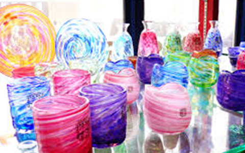
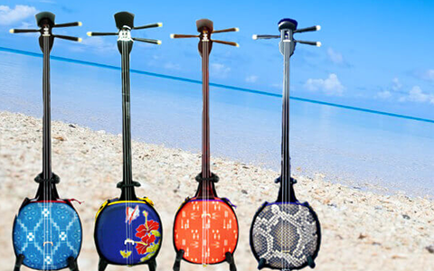

沖縄の他の文化体験
琉球ガラス
沖縄の伝統工芸で、人気のお土産の一つである琉球ガラス。先ほど少し触れたように、 この美しい琉球ガラスが誕生したのは、戦後のアメリカ軍による占領がきっかけでした。 沖縄ではもともと明治時代に長崎や大阪からやって来たガラス職人によって 「吹きガラス」工芸が伝えられ、生活用品が作られていました。 そして、アメリカ軍の占領時代、アメリカ軍が使用したコーラやビールの色つきガラス瓶を 再利用してアメリカ軍向けにガラス製品を作り始めたことが現在の琉球ガラスへと繋がっています。 現在の琉球ガラスは芸術性も高く、各ガラス工房が競う合うことによって、 さらに進化を続けています。戦争がきっかけとなって誕生した琉球ガラスが高く評価され、 その地位を確立してきたことに沖縄文化の底力を感じます。
三線
沖縄の弦楽器である三線。90年代にTHE BOOMの「島唄」がヒットしたことがきっかけで、 沖縄県外でも急速に認知度が上がりました。沖縄音楽を聞いたことがある人ならすぐわかる、 優しい音色が三線の音です。 三線は本土の三味線のルーツの一つであるとも言われていますが、 音色も見た目も三味線とは大きく異なります。三線の胴の部分には、ニシキヘビの皮が貼られており、 一目で見てわかる特徴的な見た目をしています。 三線は、琉球王国時代に中国から伝わったと言われています。当初は琉球王国の宮廷内で流行し、 その後徐々に庶民の間に広がっていきました。 沖縄文化の音楽面において、三線はなくてはならない存在です。